Overview
This document describes how looking and aiming are controlled in Mannequin on the example human AIs in the SDK. This is a fairly complex setup, but it allows for a lot of control and it follows a clear pattern than can also be applied to other kinds of character control. This structure lets the user very accurately control when and how procedural looking should work. Other, simpler setups are possible.
We will describe here everything in the context of looking, but aiming behaves similarly.
When animation allows it (a lot more on that below) lookPoses will be used whenever flowgraph or AI requests to look.
The control over the body is currently default AI looking behavior: When standing still an AI will turn towards the look target after a while (or immediate for angles bigger than 30 degrees). When moving & looking, AI will strafe a bit so their body points somewhere halfway between the move direction & the direction of the look target. (for programmers: this can be tweaked in the PlayerMovementController).
When AI is playing a specific animation you need to explicitly allow lookposes to play on top of the animation. The following sections will explain how to do this and provide background information.
See Part 1 and 2 below for the basic setup and idea.
If you want more control over timing of looking on top of animations read part 4.
If you want more control over which lookpose asset to play read part 5.
Read part 6 for more details on the default selection of lookposes and how to tweak those.
2. Basic Setup
For example, suppose you want to support looking on the fragment called IA_PsychoDoorBreachRight_01.
You open up the preview setup for your AI (in the SDK example this one is called SDK_humanPreview.xml).
Then you browse to the
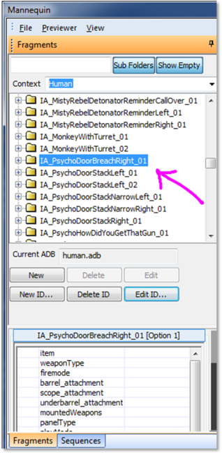
Click on the button called 'Edit ID…' to see which
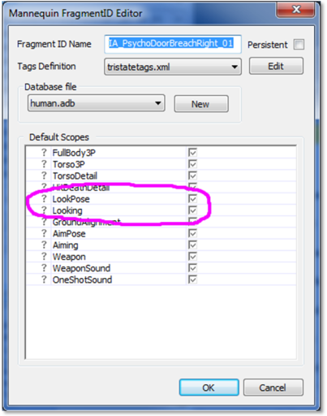
Above is how this typically looks like. Look for the Scopes called LookPose and Looking.
In the example above both Scopes are 'checked', which means we have full control over which lookpose plays (LookPose scope), and whether or not we allow to look (Looking scope).
Which scopes we control is also visible when you open up a specific Fragment. For example:
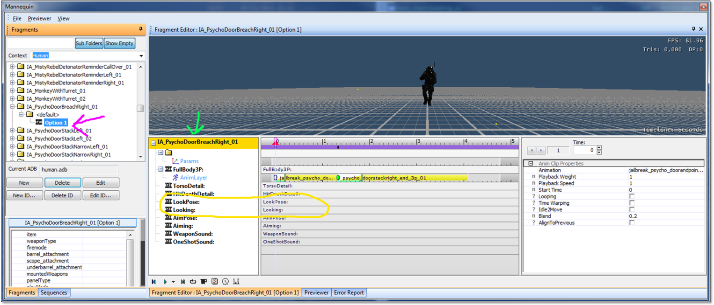
In the screenshot above the pink arrow shows that I selected the fragment "<default>", "Option 1".
You can see the animation sequence that this <default> fragment will play. You can also see in the region surrounded by the yellow line that there are tracks for the LookPose and Looking scopes in this fragment, but they are empty by default! We do have full control over these scopes, but by default there is no LookPose or Looking at all. In part 3 and 4 below we look into how we can create tracks here to control exactly which LookPose assets to use at which point in the fragment, or to control exactly where in the fragment we allow looking. But for now let's see how we can quickly allow looking for the whole duration of the fragment. The trick is to NOT take full control over the LookPose nor Looking scope and trust the game code to work its magic.
Let's go back to the Edit ID… window (to open it up just press Edit ID… again – just make sure IA_PsychoDoorBreachRight_01 or anything inside that FragmentID is selected before you do so)
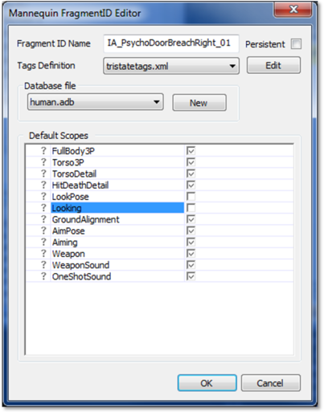
Un-check LookPose and Looking as in the screenshot above and press OK.
Now let's look at our <default> Fragment again:
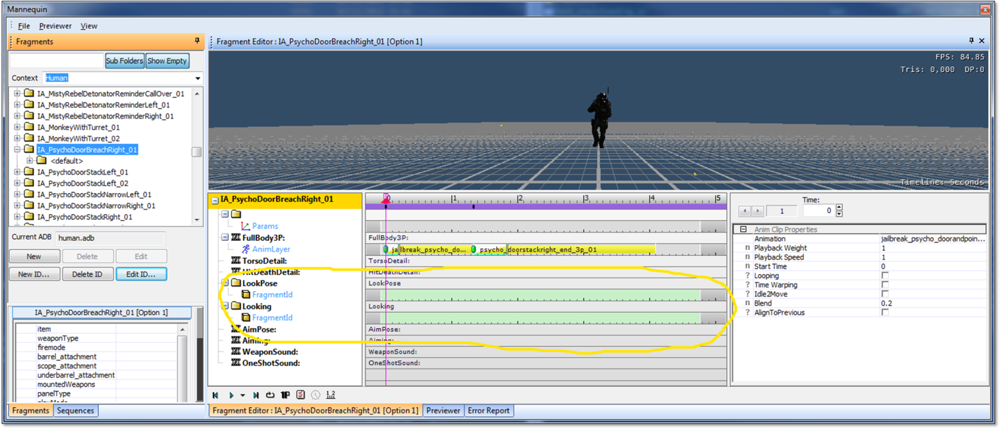
Two light green tracks appeared. This shows you that you now gave up control over the LookPose and Looking scope completely. The game can now do whatever it wants on these scopes while it plays this door breach fragmentID. And the game is set up in such a way that it will, by default, start playing a default LookPose asset and by default allow Looking. See part 6 for more details on this.
At this point you might already be done. If you save your changes the game will automatically use the default lookposes to make the AI look around – provided you use something like a LookAt flownode to actually request looking and to specify where to look at.
An example flowgraph setup looks like this:
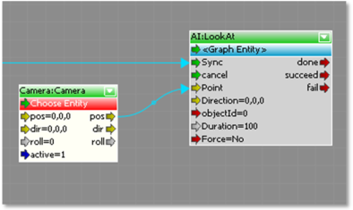
Here the AI will try to look at the Camera for 100 seconds.
A very similar story holds true for AimPose and Aiming! So if you want to enable aiming during your animation, make sure you do not take full control over those scopes in the Edit ID… window.
3. Decoupling Looking/LookPose and Requests
Before we go on it's good to highlight that in our setup we decoupled 3 things:
- The Looking scope specifies whether the animation allows looking or not. See part 4 for more information. For programmers it shouldn't be too hard to add more scopes that give independent control over the Look 'field of view', how fast you want the head to turn, whether or not you want to body to turn, and so on and so on and so on…
- The LookPose scope specifies which LookPose asset to use. For example one that controls the whole body? The Head only? Or a lookpose specifically tailored for your asset maybe? See part 5 for more information.
- Whether we want to look and where we want to look is controlled by FlowGraph or AI behavior.
We could have chosen to expose the last point, the want and where, in Mannequin too. But we didn't as it proved useful to keep the separation between:
- Mannequin fragments specify timing and style – they are selected to execute requests
- AI behavior (or flowgraph) make requests and provide external data like target positions
Note: Of course we can discuss about what 'style' exactly means and expand the scope of CryMannequin where needed... One request that came up is 'animation-driven' looking, where the animation provides the looktarget as a joint and we have a procedural clip to control when we use this joint as the target. This would still be overridden by AI requests though.
4. Detailed Control Over Looking
If you want to specify exactly when looking is allowed in a fragment, we'll need to check Looking again.
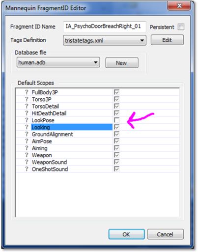
Only Looking needs to be checked for this (the default LookPose is typically good enough so we don't need to control the LookPose scope).
Now select the fragment you want to edit and use the right-click menu on the Looking scope to add a track here:
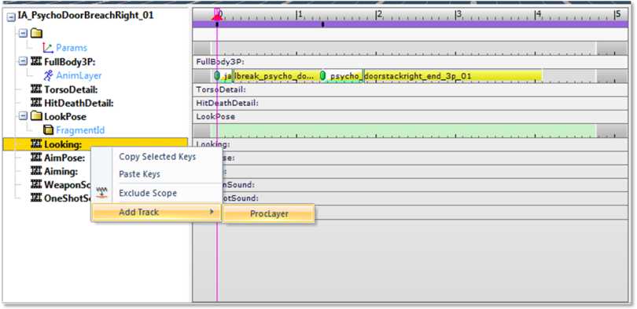
You'll notice that only 'proclayer' is allowed, we set it up such that no animations are allowed here.
When you do this, a track will appear and you can now double-click on there (pink arrow below) to add a Procedural Clip to allow looking. Select the Type which is – no surprises here – called Looking.
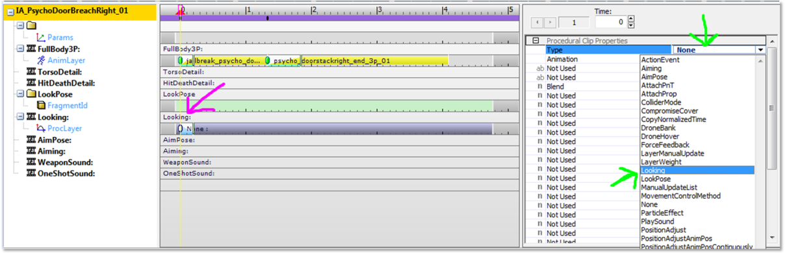
Now you can move this
Feel free to add more Looking procclips, to tweak the blendtime, or to add procclips of type 'None' to blend out the Looking:
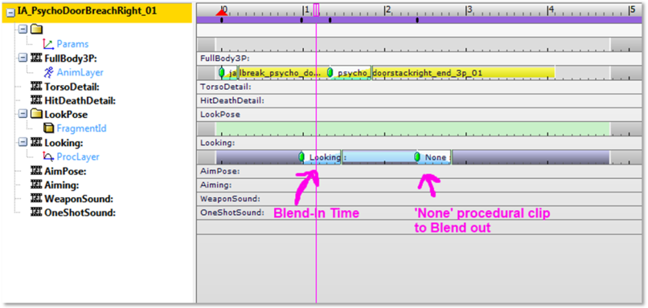
When you do this, you will allow looking exactly when the Looking procclip is running. Keep in mind that there still needs to be a request from AI or FlowGraph to look, just like above.
Note: A Scope_Looking folder will appear when you re-open the CryMannequin editor. This is a side-effect of how these multiple scopes work 'under-the-hood'. As a general rule do not edit the looking fragment in that folder.
5. Detailed Control over LookPose
If you want to specify exactly which lookpose asset is used in a fragment the story is very similar to the story about Detailed Control over Looking above.
Make sure you have the LookPose scope checked in the Edit ID… window.
Add an AnimLayer for that LookPose scope. Yes, an Animlayer, not a ProcLayer this time. LookPoses are blendspaces very much like our Move and Turn animations so they are treated in Mannequin just like those.
Add lookpose animation clips and None clips to specify exactly when to use which pose.
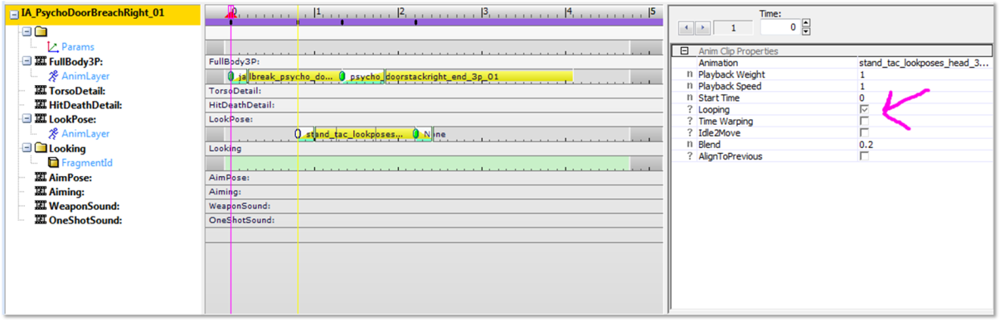
Check Looping as pointed out by the pink arrow in the screenshot above to make sure the lookpose continues playing. Use a None clip to stop the lookpose.
In the example the 'head' lookposes are selected for a short period. Looking will only be allowed during this period as looking doesn't work if no lookpose is specified on the lookpose AnimLayer! All the spots on this layer where we do not specify a lookpose will not have lookik. Do NOT use this 'feature' to simply disable looking for a certain period – use the Looking scope for that instead, as explained in part 3. That way you take advantage of the fact that lookposes already have a default setup that takes into account different tag states (for example different poses for different weapons). See part 5 for more information on this.
It is not possible to take control of certain scopes for only certain specific periods of the fragment – with this setup it's all or nothing.
If you want you can control both LookPose and Looking, but again keep in mind that when you take control over the LookPose scope you will NOT get any looking if there is no LookPose specified. So in the picture below, AI or flowgraph will only be able to look in the marked region.
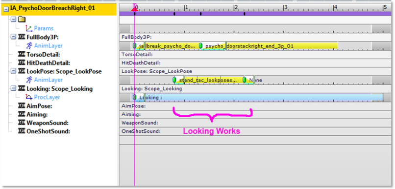
Note: A Scope_LookPose folder will appear when you re-open the CryMannequin editor. This is a side-effect of how these multiple scopes work 'under-the-hood'. As a general rule do not edit the lookpose fragment in that folder.
6. Default Looking and LookPoses
Here are some details on what happens when the fragment gives up control over the Looking and LookPose scopes.
The game will look for fragments in the FragmentIDs named Looking and LookPose and push these automatically onto the scopes with the same name. In code, this is done in the AnimActionAILooking.cpp and AnimActionAIAiming.cpp. It will also listen to changes in global tagstate (which tags are currently active) and push new fragments when appropriate. All these fragments can be found and edited in Mannequin, should you want to. They are fragmentIDs just like the rest and can be found in the Fragments browser:
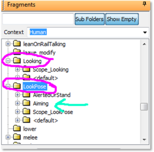
You will see there are already quite a few variations set up. The cyan arrow points to a special example: we have a variation set up for LookPose when the 'Aiming' tag is set. This tag is only set when the behavior or flowgraph requests aiming, so this is a special LookPose which is picked when we are also aiming. This special lookpose only moves the head such that it doesn't interfere too much with the aimpose.
Tip: Feel free to add new variations where appropriate. Be careful as these defaults will be used during normal AI behavior.